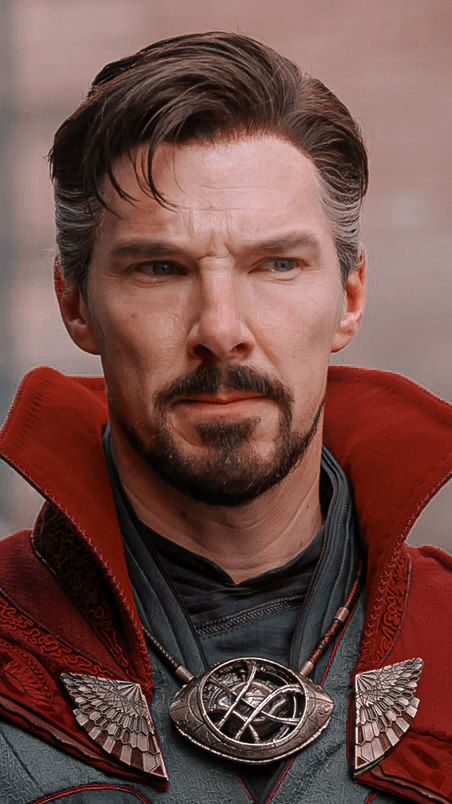

Stephen Strange

Summary
Experienced sorcerer with a strong background in the mystic arts, specializing in time manipulation and interdimensional travel. Proven ability to lead teams in high-stakes situations and protect the world from supernatural threats.
Education
- Doctor of Medicine, Harvard Medical School
- Master of the Mystic Arts, Kamar-Taj
Experience
- Master of the Mystic Arts, Kamar-Taj (2016 - Present)
- Trained in advanced sorcery and mystic arts
- Responsible for protecting Earth from mystical threats
- Neurosurgeon, New York City Hospital (2000 - 2016)
- Performed complex surgeries with a focus on neurology
- Recognized for innovative techniques and patient care
- Avenger, Earth’s Mightiest Heroes (2016 - Present)
- Collaborated with other superheroes to combat global threats
- Utilized the Eye of Agamotto to manipulate time in critical situations
Skills
- Advanced sorcery and spellcasting
- Time manipulation and dimensional travel
- Leadership and team collaboration
- Expert in neurosurgery
- Problem-solving under pressure
Certifications
- Certified Sorcerer, Kamar-Taj
- Board Certified Neurosurgeon, American Board of Medical Specialties
Other